|
Balma de Son Matge |
 |
Castell de Santueri |
 |
Cova de Sa Conillera de S'Àguila |
 |
Cova de Canet |
 |
Cova de Muleta |
 |
Dolmen de S'Aigua Dolça |
 |
Dolmen de Son Bauló de Dalt |
 |
Dolmen de Son Real |
 |
Illot de Sa Galera |
 |
Necròpolis de Son Pellisser |
 |
Necròpolis de Son Sunyer |
| NAVETA DE BINIANIC |  |
| TORRE D’EN GALMES | 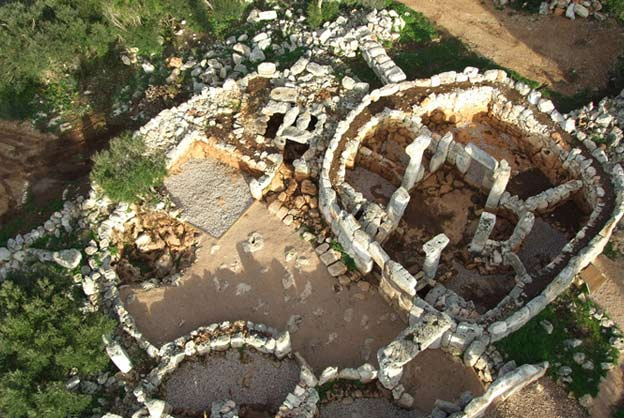 |
| CALA MORELL | 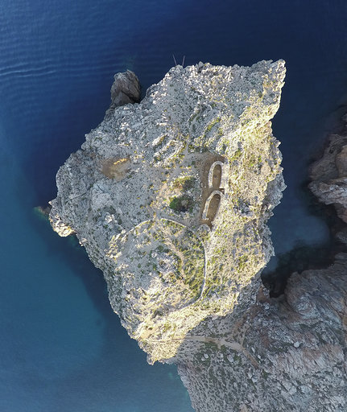 |
| HIPOGEU TORRE DEL RAM | 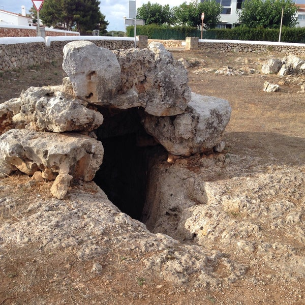 |
| SON NA CAÇANA | 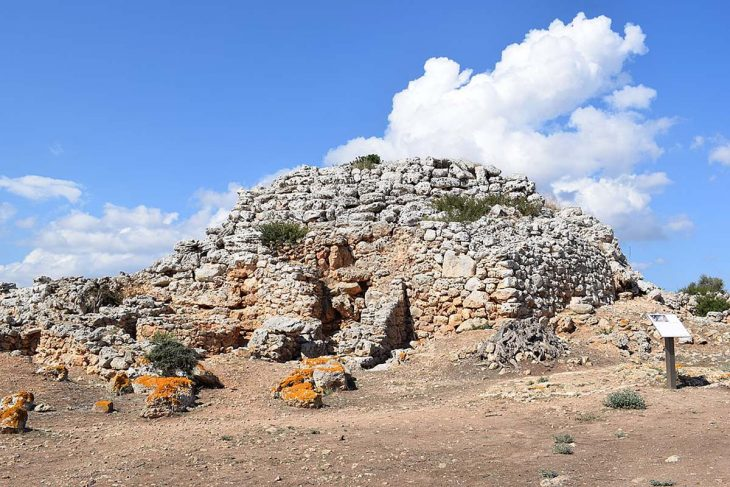 |
| TORRELLAFUDA | 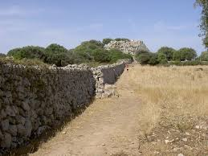 |
| SON CATLAR | 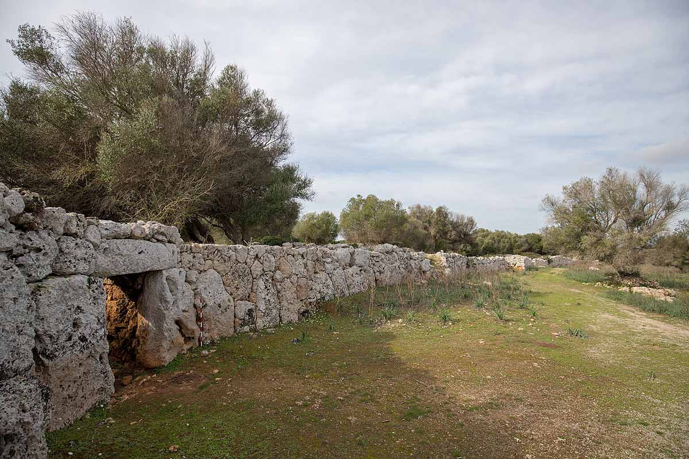 |
| TALATI DE DALT | 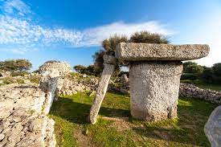 |
| TREPUCÓ | 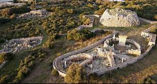 |
| MONFETI | 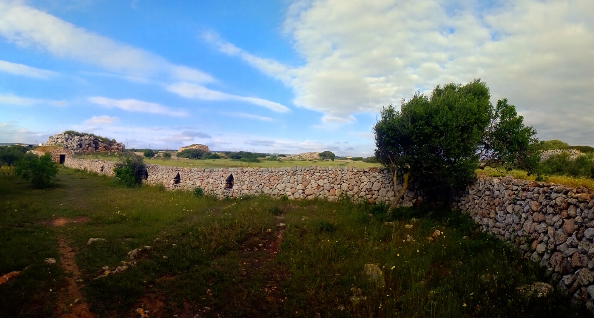 |
| ES CASTELLÀS DES CAPARROT DE FORMA | 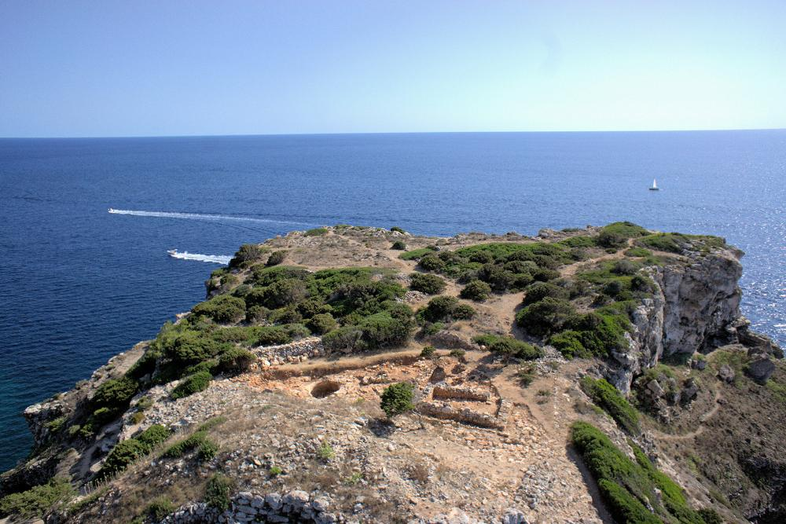 |
| TORRALBA D’EN SALORT |  |
| BINISSAFULLET | 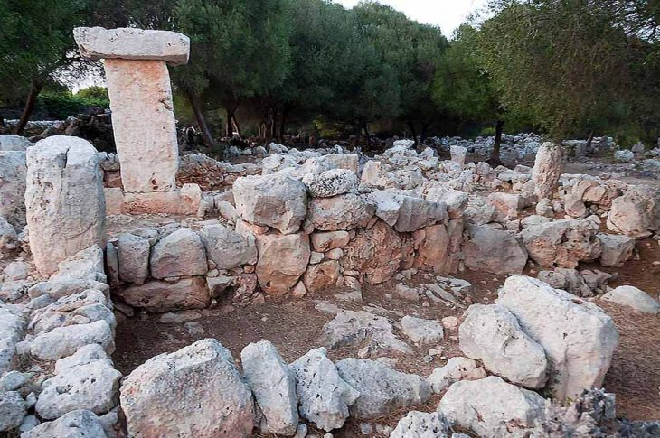 |